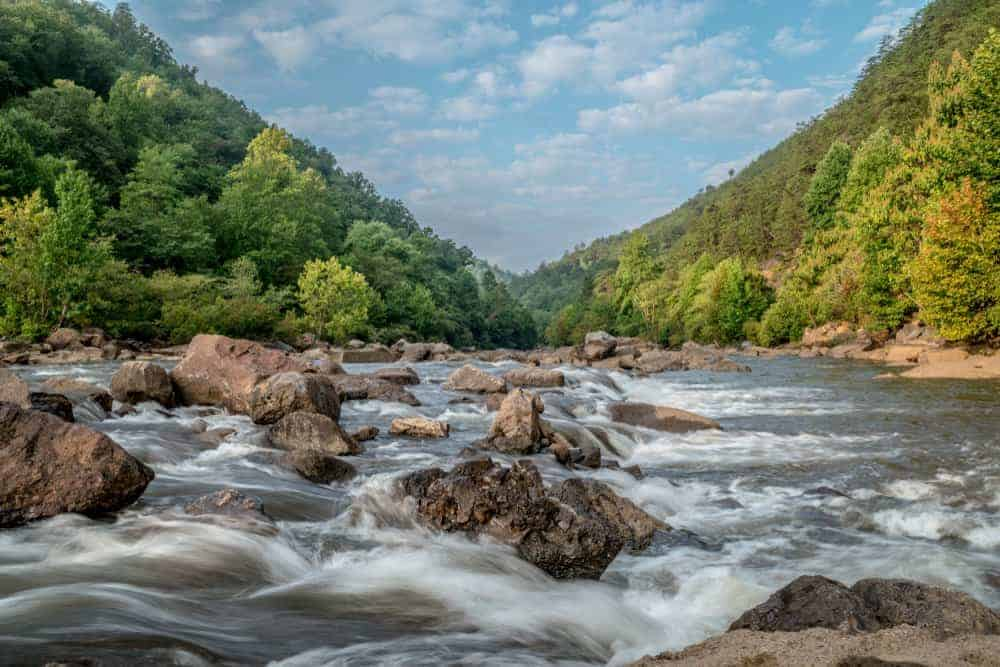

Ocoee River: Tennessee
Colorado River: Arizona
Deerfield River: Massachusetts
Cossatot River: Arkansas
Descriptions
The Ocoee is one of the most popular whitewater rafting adventure in America, and it is a great one for beginners. It’s actually the most popular whitewater rafting adventure in America, and it’s a great one for beginners. This half-day trip involves ten miles on the Upper and Middle Ocoee River in the Cherokee National Forest of Southeast Tennessee. The river has an interesting flow pattern. During the night, it’s diverted to a neighboring electric plant where its rapids provide energy for the surrounding cities for the next day, and in the morning, it’s unleashed for adventurers.
While a tamer river, the Colorado is a bucket list river trip due to its stunning location at the base of one of the seven natural wonders of the world—the mighty Grand Canyon. You really can’t get a much more scenic river! There are around ten outfitters offering excursions on the river that range from half-day trips to multi-week excursions. While most of the river usually has moderate Class II and Class III rapids, during certain times of the year and in small sections, they can reach the maximum Class VI.

Another Northeastern adventure awaits just a two-hour drive from Boston. The Deerfield River runs from Verton to NW Massachusetts and boasts Class IV rapids in the serene, forest scenery of the Berkshire Mountains. Like most rivers, the northern sections of Vermont are best tackled by experienced rafters and kayakers. However, the Mass section features Class III-V manageable rapids and calmer stretches with a few peaceful swimming pools.
Another Arkansas beauty with a “Wild and Scenic” designation, the Cossatot is for the adventurous. It is primarily tackled by kayakers and canoeists, as there are no commercial rafting companies offering tours. You can however rent kayaks and canoes at Sugar Creek Lodging near the city of Mena. It’s fair to say here though that like all of Arkansas’s rivers, the Cossatot’s adventure rating is highly correlated with the season and rainfall for the year. Arkansas is a hot state in the summer months, and most rivers run low or dry. You’ll want to tackle the Cossatot in the spring with the waters are high.